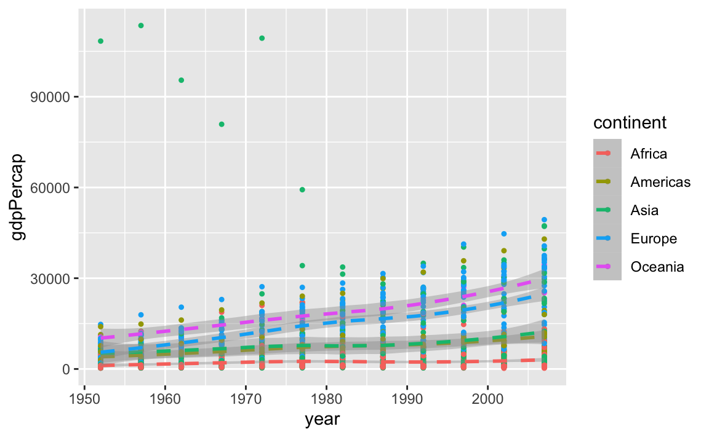
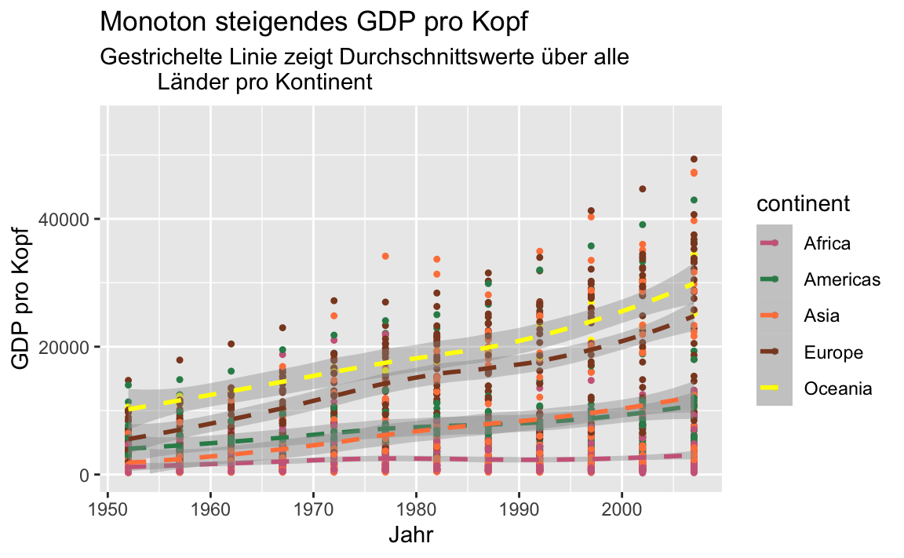

Kapitel 11 Bausteine
In den nächsten Abschnitten schauen wir uns die verschiedene Bausteine einer ggplot2 Grafik genauer an. Dabei sehen wir auch eine Reihe von Beispielen, die uns zeigen, wie man die verschiedenen Bausteine miteinander verknüpft.
11.1 Aesthetics
Mit der Funktion aes() lässt sich das Aussehen der Grafik regeln (nicht der Inhalt). Wir können z.B.
- die Position:
xundy - die Farbe:
colorundfill - die Form:
shape - den Linientyp:
linetype - die Größe der Symbol:
size
festlegen. Die jeweiligen Werte dieser aesthetics können entweder fix oder in Abhängigkeit von Variablen aus dem verwendeten Datensatz gewählt werden.
Nicht jedes aesthetic kann allerdings mit allen verfügbaren geoms kombiniert werden. So macht z.B. der linetype ja wenig Sinn in geom_point(). Eine Übersicht der möglichen aesthetics findet man in der Hilfe jeder geom-Funktion. In der Hilfe von geom_point() findet man z.B.
geom_point {ggplot2} R Documentation
Points
Description
The point geom is used to create scatterplots. The scatterplot is most useful for displaying the relationship between two continuous variables. It can be used to compare one continuous and one categorical variable, or two categorical variables, but a variation like geom_jitter(), geom_count(), or geom_bin2d() is usually more appropriate. A bubblechart is a scatterplot with a third variable mapped to the size of points.
Usage
geom_point(
mapping = NULL,
data = NULL,
stat = "identity",
position = "identity",
...,
na.rm = FALSE,
show.legend = NA,
inherit.aes = TRUE
)
...
Aesthetics
geom_point() understands the following aesthetics (required aesthetics
are in bold):
x
y
alpha
colour
fill
group
shape
size
stroke
Learn more about setting these aesthetics in vignette("ggplot2-specs").
Will man über die Daten die Wert für die verschiedenen aesthetics definieren, so muss dies innerhalb der aes() Funktion geschehen. Werden Argumente auf fixe Werte gesetzt, so sind sie außerhalb der aes() Funktion zu setzen.
In einem Plot der gdpPercap Daten für Deutschland und Frankreich wollen wir anhand von unterschiedlichen Farben die Daten der beiden Länder unterscheiden. Dazu müssen wir nur colour innerhalb von aes() den Wert country zuweisen.
Auf der anderen Seite wollen wir die Größe der zu zeichnenden Punkte etwas erhöhen. Aber die Größe soll für beide Länder gleich sein. Daher definieren wir size außerhalb der aes() Funktion.
gapminder %>%
filter(country %in% c("Germany","France")) %>%
ggplot(mapping = aes(x = year, y = gdpPercap, colour = country)) +
geom_point(size = 3) 
11.2 Geoms
Mithilfe der geom_xxx() Funktionen können wir die Daten als geometrische Formen (Punkte, Linien, …) in einer Grafik darstellen. Jede ggplot2 Grafik benötigt daher mindestens ein geom. Beispiele sind
Da wir nicht alle verfügbaren geoms auflisten können/wollen, sei an dieser Stelle auf die ggplot2 Seite verwiesen.
Im nächsten Beispiel stellen wir die gleichen Daten/Variablen über zwei verschiedene geoms dar.
gapminder %>%
ggplot(mapping = aes(x = year, y = gdpPercap)) +
geom_point()
gapminder %>%
ggplot(mapping = aes(x = year, y = gdpPercap)) +
geom_smooth()
## `geom_smooth()` using method = 'gam' and formula 'y ~ s(x, bs = "cs")'
Obwohl die gleichen Daten visualisiert wurden, ist das Ergebnis doch recht unterschiedlich. Der Scatterplot zeigt alle (abgesehen von überzeichnen) Daten, wohingegen mit geom_smooth() eine geglätteter Zusammenhang dargestellt wird.
Interessant sind hier natürlich die wenigen großen gdpPercap Werte in der linken Grafik
gapminder %>%
filter(gdpPercap > 50000)
## # A tibble: 6 × 6
## country continent year lifeExp pop gdpPercap
## <fct> <fct> <int> <dbl> <int> <dbl>
## 1 Kuwait Asia 1952 55.6 160000 108382.
## 2 Kuwait Asia 1957 58.0 212846 113523.
## 3 Kuwait Asia 1962 60.5 358266 95458.
## 4 Kuwait Asia 1967 64.6 575003 80895.
## 5 Kuwait Asia 1972 67.7 841934 109348.
## 6 Kuwait Asia 1977 69.3 1140357 59265.Kuwait hat über den gesamten Zeitraum sehr hohe GDP Werte. Aber zu Beginn der Aufzeichnungen waren die Werte in Bezug auf die damals noch recht kleine Populationsgröße sogar außergewöhnlich hoch.
Einem ggplot Objekt können wir nicht nur ein geom zuordnen. Prinzipiell können wir beliebig viele weitere geoms hinzufügen. Wir können also die gerade durchgeführte Glättung der Daten auch direkt zum Scatterplot hinzufügen
gapminder %>%
ggplot(mapping = aes(x = year, y = gdpPercap)) +
geom_point() +
geom_smooth()
## `geom_smooth()` using method = 'gam' and formula 'y ~ s(x, bs = "cs")'
Wählen wir die Farbe eines geometrischen Objekts (oder mehrerer) anhand einer Faktorvariable, so erhalten wir automatisch eine entsprechende Legende
gapminder %>%
ggplot(mapping = aes(x = year, y = gdpPercap)) +
geom_point(mapping = aes(colour = continent)) +
geom_smooth()
## `geom_smooth()` using method = 'gam' and formula 'y ~ s(x, bs = "cs")'Beachtet dabei, dass wir colour nur für geom_point() gewählt haben. Die Glättung erfolgt weiterhin über alle Daten und nicht separat für jeden Kontinent. In diesem Fall haben wir in geom_point() ein lokales mapping definiert.
Aber natürlich hätten wir auch zusätzlich die Glättung pro Kontinent durchführen können. Dazu schreiben wir dann einfach colour in das globale mapping und löschen das lokale wieder (es wird ja jetzt lokal nichts anders gemacht als global definiert wurde).
gapminder %>%
ggplot(mapping = aes(x = year, y = gdpPercap, colour = continent)) +
geom_point() +
geom_smooth()
## `geom_smooth()` using method = 'loess' and formula 'y ~ x'
Nehmen wir mal an, dass uns nun aber die Punkte etwas zu groß sind und wir in diesem Plot kein durchgezogenen Linien verwenden wollen. D.h. wir würden gerne andere (aber fixe, nicht von Variablen abhängende) aesthetic Werte setzen. Linientyp gefällt mir auch nicht in diesem Plot. Das lässt sich schnell ändern.
gapminder %>%
ggplot(aes(x = year, y = gdpPercap, colour = continent)) +
geom_point(size = 0.9) +
geom_smooth(linetype = 2)
## `geom_smooth()` using method = 'loess' and formula 'y ~ x'
11.3 Statistische Transformationen
Jede geom_xxx() Funktion besitzt eine “Standard-Statistik”, die beim Aufruf der Funktion berechnet wird.
args(geom_point)
## function (mapping = NULL, data = NULL, stat = "identity", position = "identity",
## ..., na.rm = FALSE, show.legend = NA, inherit.aes = TRUE)
## NULLBei einem Scatterplot ist die Statistik einfach nur die Identität.
Ein Balkendiagramm verwendet aber z.B.
args(geom_bar)
## function (mapping = NULL, data = NULL, stat = "count", position = "stack",
## ..., width = NULL, na.rm = FALSE, orientation = NA, show.legend = NA,
## inherit.aes = TRUE)
## NULLdie Transformation count. Das macht durchaus Sinn, da ja gezählt werden muss/soll wie viele Beobachtungen in die jeweilige Kategorie fallen.
Die jeweiligen Statistiken könnten über die entsprechenden stat_xxx() Funktionen geplottet werden. Da aber jede geom_xxx() Funktion mit mindestens einer dieser stat_xxx() Funktionen verbunden ist, ist es oftmals einfacher direkt die entsprechende geom_xxx() Funktion zu verwenden. Aber natürlich könnte die stat_xxx() Funktion auch direkt aufgerufen werden.
Daher liefern die beiden nachfolgenden Befehle auch die exakt gleiche Grafik
ggplot(gapminder, aes(x = continent)) +
geom_bar()
ggplot(gapminder, aes(x = continent)) +
stat_count()
Jedes geom hat zwar ein Standard-Transformation, aber natürlich können oftmals noch weitere Transformationen berechnet/genutzt werden. Im Abschnitt Computed variables der Hilfe zu einem geom sieht man alle verfügbaren Transformationen
Für geom_bar() sind dies
Computed variables
count
number of points in bin
prop
groupwise proportion
Die relativen Häufigkeiten berechnet man also über prop. Dazu muss die y-Variable auf prop gesetzt werden. Da der Aufruf
aber nach einer Variable prop suchen würde, muss eine alternative Notation in diesem Fall verwendet werden

Der Befehl hat jetzt zwar eine Grafik erzeugt, aber die sieht noch nicht so aus, wie wir das erwartet haben. Die relativen Häufigkeiten wurden innerhalb der fünf Gruppen berechnet und nicht über alle Beobachtungen. D.h. wir müssen der Funktion noch sagen, dass es nur eine Gruppe geben soll.
11.4 Scales
Scales steuern die Zuordnung von Daten zu aesthetics. Sie nehmen die Daten und bestimmen damit Größe, Farbe, Position oder Form von Objekten. Sie erlauben euch auch die Achsen und die Legend nach euren Vorstellungen anzupassen.
Man kann sicherlich mit ggplot2 Grafiken erstellen, ohne zu wissen, wie scales funktionieren. Aber wenn ihr versteht wie scales funktionieren und lernt, wie ihr sie einstellen könnt, werdet ihr viel mehr Kontrolle über eure Grafiken bekommen.
Über scale Funktionen der Form scale_"aesthetic"_"type" können wir aesthetics wie
-
colorundfill positionsizeshapeline type
modifizieren. Argumente dieser Funktionen sind z.B. name, limits, breaks oder labels.
Zuerst spielen wir etwas mit Farben. Dazu plotten wir erneut year gegen gdpPercap und wählen für jeden Kontinent eine eigene Farbe. Da wir die Farben über colour definieren, verwenden wir danach Funktionen aus der Klasse scale_colour_xxx(). Hätten wir beispielsweise Flächen über das aesthetic fill mit Farbe gefüllt, so würden wir Funktionen aus der Klasse scale_fill_xxx() verwenden um die Farben anzupassen.
(p <- gapminder %>%
ggplot(aes(x = year, y = gdpPercap, colour = continent)) +
geom_point(size = 0.9) +
geom_smooth(linetype = 2) )
## `geom_smooth()` using method = 'loess' and formula 'y ~ x'
p + scale_colour_brewer(palette = "Set1")
## `geom_smooth()` using method = 'loess' and formula 'y ~ x'
# Farbpaletten von http://colorbrewer2.org/
p + scale_colour_grey(start = 0.1, end = 0.9) # keine so gute Wahl
## `geom_smooth()` using method = 'loess' and formula 'y ~ x'
p + scale_colour_manual(
values = c("blue", "gold", "sienna1", "sienna4", "hotpink1", "hotpink4"),
name = "Kontinent")
## `geom_smooth()` using method = 'loess' and formula 'y ~ x'


In diesem Beispiel haben wir also die Farbe nachträglich über eine vorgegebene Palette, in Grau-Stufen bzw. manuell gewählt. Im letzten Beispiel haben wir zusätzlich noch den Titel der Legende geändert über das name Argument.
Die Achsenbeschriftung der y-Achse ist nicht wirklich schön, weil nicht unbedingt selbsterklärend. Daher ändern wir im nächsten Schritt die Achsenbeschriftung.
p <- p +
scale_colour_manual(
values = c("blue", "gold", "sienna1", "sienna4", "hotpink1", "hotpink4"))
p + scale_y_continuous("GDP pro Kopf")
## `geom_smooth()` using method = 'loess' and formula 'y ~ x'
Da es sich bei gdpPercap um eine stetige Variable handelt, haben wir scale_y_continuous() verwendet (im Gegensatz zu scale_y_discrete()) um die Achsenbeschriftung zu ändern. Über die Hilfsfunktion labs() können wir die Beschriftung der Grafik aber auch einfacher/intuitiver ändern.
(p <- p + labs(x = "Jahr", y = "GDP pro Kopf",
title = "Monoton steigendes GDP pro Kopf",
subtitle = "Gestrichelte Linie zeigt Durchschnittswerte über alle
Länder pro Kontinent"))
## `geom_smooth()` using method = 'loess' and formula 'y ~ x'
Die frühen Kuwait-Beobachtungen ziehen die y-Achse stark auseinander. Daher könnte man vielleicht etwas in den Plot hinein zoomen wollen. Dazu kann man das Koordinatensystem anpassen über coord_cartasian(). Alternativ könnte man auch mit der Funktion ylim() arbeiten (analog existiert natürlich auch xlmin()).
Verwendet man aber xlim() bzw. ylim(), so werden alle Datenpunkte, die nicht im zu plottenden Bereich liegen, aber nicht nur nicht gezeichnet, sondern auch aus dem Datensatz (für diesen einen Plot) entfernt. Dies hat dann aber
Auswirkungen auf Teile des Plots, die auf statistische Transformationen basieren, die mithilfe der vorhanden Daten berechnet wurden.
p + ylim(0,55000)
## `geom_smooth()` using method = 'loess' and formula 'y ~ x'
## Warning: Removed 6 rows containing non-finite values
## (stat_smooth).
## Warning: Removed 6 rows containing missing values
## (geom_point).
(p <- p + coord_cartesian(ylim = c(0, 55000)))
## `geom_smooth()` using method = 'loess' and formula 'y ~ x'
In der rechten Grafik ist der Verlauf der Kurven unverändert. In der linken Grafik hingegen liegt die Kurve für Asien nun bis Mitte der 80er Jahre deutlich unter der Kurve für Amerika.
Weitere (mögliche) Positionsänderungen ergeben sich durch Skalierungen der Achsen wie scale_x_log10(), scale_y_sqrt() oder
p + scale_x_reverse()
## `geom_smooth()` using method = 'loess' and formula 'y ~ x'
Für weitere Optionen sei hier auf die online Version der neuesten Auflage von ggplot2 (Wickham 2009) verwiesen.
11.5 Facets
Datensätze lassen sich oftmals bzgl. vorhandener Variablen gruppieren und oft will man dann Zusammenhänge weiterer Variablen innerhalb dieser Gruppen darstellen. Entsteht die Gruppierung basierend auf den Ausprägungen einer Variable, so kann man mit facet_wrap() arbeiten
gapminder %>%
ggplot(aes(x = year, y = gdpPercap )) +
geom_point(size = 0.9) +
geom_smooth(linetype = 2) +
facet_wrap(~ continent, ncol = 5)
## `geom_smooth()` using method = 'loess' and formula 'y ~ x'
In der letzten Grafik verwenden alle fünf Plots die gleiche Skala auf der y-Achse um die Vergleichbarkeit der Werte zu erhöhen. In manchen Fällen mag dies aber störend sein. Mit dem Argument scales könnt ihr die Skala “befreien”.
gapminder %>%
ggplot(aes(x = year, y = gdpPercap )) +
geom_point(size = 0.9) +
geom_smooth(linetype = 2) +
facet_wrap(~ continent, ncol = 2, scales = "free")
## `geom_smooth()` using method = 'loess' and formula 'y ~ x'
Erfolgt die Gruppierung anhand von zwei Variablen, so bietet facet_grid() eine passende Aufteilung des Grafikfensters in Zeilen und Spalten. Neben dem Kontinent berücksichtigen wir jetzt auch noch die Populationsgröße des Landes. Konkret fragen wir ob die Population im entsprechenden Jahr größer als 5000000 ist, oder eben nicht.
gapminder %>%
group_by(continent) %>%
ggplot(aes(x = year, y = gdpPercap )) +
geom_point(size = 0.9) +
geom_smooth(linetype = 2) +
facet_grid(continent ~ pop > 5000000, scales = "free")
## `geom_smooth()` using method = 'loess' and formula 'y ~ x'
Für Ozeanien erhalten wir so z.B. eine Unterteilung in Australien (TRUE) und Neuseeland (FALSE).
Die Beschriftung der Spalten sieht so natürlich nicht besonders schön aus. Ohne den Code ist die Beschriftung auch nicht zu verstehen, “Was ist wahr??”.
Daher versuchen wir die Beschriftung über das Argument labeller der facet_grid() Funktion zu ändern. Zulässige Werte für das Argument labeller können über die labeller() Funktion definiert werden. Hier hat man neben weiteren Optionen die Möglichkeit für jede Ausprägung der Variable, die eine Spalten- (oder Zeilen-) Aufteilung definiert, ein Label zu setzen. Dazu muss
die Variable über ihren Namen aufgerufen werden. Nun scheint es so, dass ein Aufruf über “Sondernamen” wie pop > 5000000 nicht funktioniert. Um trotzdem die Verwendung von labeller zu illustrieren, definieren wir zuerst mit mutate eine neue Variable pop5 und setzen anschließend die Labels über das Argument labeller.
gapminder %>%
mutate(pop5 = pop > 5000000) %>%
group_by(continent) %>%
ggplot(aes(x = year, y = gdpPercap )) +
geom_point(size = 0.9) +
geom_smooth(linetype = 2) +
facet_grid(continent ~ pop5, scales = "free",
labeller = labeller(
pop5 = c(`TRUE` = "pop large than 5 MM",
`FALSE` = "pop at most 5 MM")))
## `geom_smooth()` using method = 'loess' and formula 'y ~ x'
11.6 Themes
Abschließend wollen wir noch über verschiedene themes sprechen. Über themes kann man das Aussehen der nicht datenbezogenen Elemente einer Grafik, wie z.B.
- die Beschriftungen
- den Hintergrund
- die Legende
- ….
verändern. Eine Reihe von themes sind bereits vorhanden, wobei theme_gray() das Default theme ist. Siehe auch ?theme_gray().
p
## `geom_smooth()` using method = 'loess' and formula 'y ~ x'
p + theme_bw()
## `geom_smooth()` using method = 'loess' and formula 'y ~ x'
p + theme_dark()
## `geom_smooth()` using method = 'loess' and formula 'y ~ x'
p + theme_minimal()
## `geom_smooth()` using method = 'loess' and formula 'y ~ x'Wir möchten nun gerne folgende Änderungen an der Grafik vornehmen:
- die Größe der Achsenbeschriftung ändern
- die Gitterlinien ohne Beschriftung entfernen
- eine Überschrift hinzufügen
- die Legende in die Grafik verschieben
- die Hintergrundfarbe der Grafik und der Legende ändern
Die meisten dieser Änderungen können wir mit theme() durchführen.
p <- p + scale_colour_brewer(palette = "Set1")
## Scale for 'colour' is already present. Adding
## another scale for 'colour', which will replace
## the existing scale.
p +
theme(
axis.text = element_text(size = 14),
legend.key = element_rect(fill = "gold"),
legend.background = element_rect(fill = "#0065BD"),
legend.position = "bottom",
legend.text = element_text(colour = "white"),
panel.grid.major = element_line(colour = "grey40"),
panel.grid.minor = element_blank(),
panel.background = element_rect(fill = "gold")
)
## `geom_smooth()` using method = 'loess' and formula 'y ~ x'Ob das nun alles schön aussieht, sei dahingestellt, aber es zeigt durchaus die vorhandenen Möglichkeiten.
Will man gewisse Einstellung öfter verwenden, so kann man diese auch in einem theme Objekt speichern und wiederverwenden.
mein_theme <- theme(
axis.text = element_text(size = 14),
legend.key = element_rect(fill = "hotpink3"),
panel.grid.major = element_line(colour = "grey40"),
panel.grid.minor = element_blank(),
panel.background = element_rect(fill = "navy")
)
class(mein_theme)
## [1] "theme" "gg"
p + mein_theme
## `geom_smooth()` using method = 'loess' and formula 'y ~ x'
11.7 Buch zum Paket
Dieser Abschnitt konnte nur einen kleinen Einblick in die Möglichkeiten des ggplot2 Pakets geben. Eine ausführliche Beschreibung findet man im Buch zum Paket.